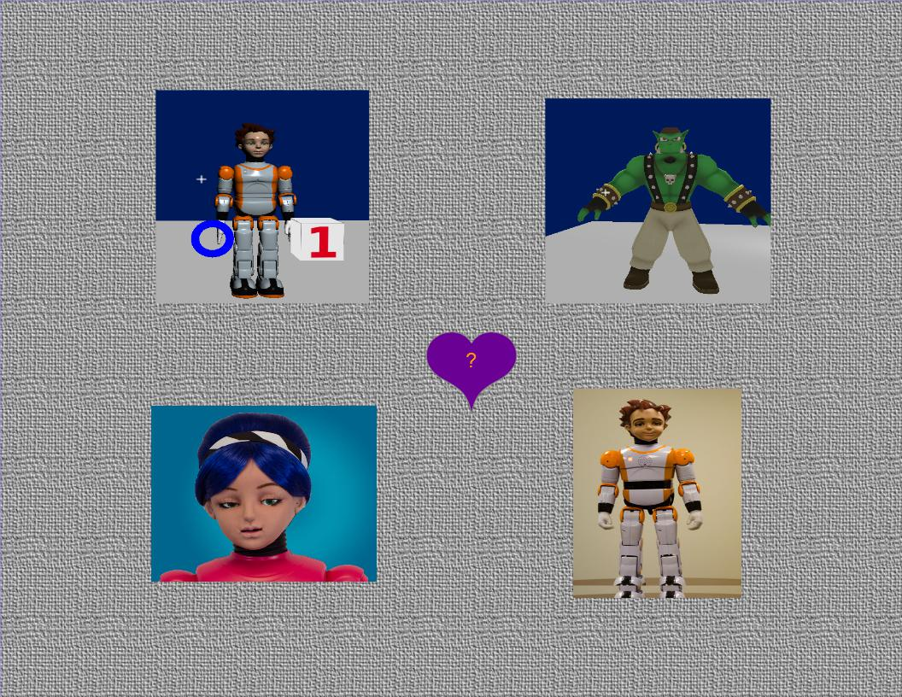

Welcome to GLUE.ai!
Open source software for social robots
GLUE.ai is a toolbox of software and specifications used to build open source social robotics systems.
You can use it to make engaging robot characters, running inside both actual robot hardware, and computer simulations.
Each character may use a broad combination of physical and verbal features, which may evolve over time in complex, fun, exciting ways.

(Zeno and Alice images are Copyright Hanson Robokind LLC, used by permission)
Fun and useful things our characters like to do:
- Move - expressively, purposefully, naturally
- See - people, objects, motion, expressions, gestures
- Speak - in a variety of voices and languages
- Listen - to speech, music, and other sounds
- React and Interact - physically and verbally
- Sing and Dance - improvisationally, from memory, and by ear
- Teach, Learn, and Play
- Behave, Intend, Consider, Emote, and Remember
Running such characters requires a lot of software and data. Rather than invent all the pieces ourselves, we bring together existing
open source software and data standards to make life easier for everyone. We also divide GLUE.ai itself into a number of separate
pieces, so that our users can each choose just the pieces they need for their own applications. Each of the subprojects you
find in our materials also have their own websites:
Cogchar.org,
Robokind.org,
RWShop.org,
Appdapter.org,
JFlux.org,
Friendularity.org,
StoryChat.org,
HeadySpace.org.
If you are creating content for an existing character application based on GLUE.ai, then you will be primarily interested in our
authorable content formats, such as:
- Inform 7 and related Interactive Fiction authoring systems, used only in our StoryChat.org layer and SemPlex authoring tools.
- A relatively simple toolset for folks more interested in storytelling, games, and interaction than in traditional programming.
- Applications that strive to show true "intelligence" may decide not to use this layer, or may use it in unconventional ways.
- RDF and related Semantic Web, Linked Data, and Description Logic standards. RDF data may be edited using numerous forms, including
- Protege knowledge editor. (See also: TopBraid)
- Spreadsheets- including online Google-Docs spreadsheets, as well as local OpenOffice / Excel sheets, and other CSV-compatible editors.
- Plain text forms like Turtle and SPARQL
- MIDI, WAV, MP3 and many related musical + audio data standards (used for both sensing input and performance output).
- Camera data and vision processing formats.
- Animation and body description formats, including mappings to robot servos and onscreen displays.
- Other sensor and effector data, including input IMU and location sensing, and output lighting.
- Mathematical definitions of calculations, in a form similar to Matlab, Scilab, or Octave,
usually parsed by Symja.
If you are building your own character software application, you may see GLUE.ai as either simply a library, or as a framework for your app.
When GLUE.ai is used as a framework, then your application is a set of plugins operating at differing levels of information granularity:
- A symbol plugin can process high level information available about the character's mental state and estimated surroundings.
At this level we shape the intentions of the character. Usually this kind of plugin will only take action a few times each second, to fulfill its high level decisions, although it may be thinking continuously. It relies on input symbols published by lower level signal plugins, and produces output symbols for consumption by other components that translate the symbolic intent into physical/virtual motion, sound, and other character action.
- A signal plugin can process lower level streaming information such as camera, audio, and sensor data. Such a plugin will generally need to run many times each second, to keep up with the streaming data. This plugin may identify symbolic information in the stream, which it may publish for consideration by higher level symbolic plugins.
- Plugins may connect to GLUE.ai components over network protocols (HTTP, AMQP), or be injected directly into our processes via OSGi or equivalents.
- Configuration and state data may be shared through repository whiteboards (RDF, SQL, HDF5), and/or explicit messages (Avro, JSON).
To get you started, GLUE.ai contains a large number of existing feature components, demonstration programs, and test harnesses.
All binaries and source code are provided through our subproject websites and repositories.
Please learn more by browsing our online docs:
- GLUE.ai wiki
- Glue Resources - wiki page showing exhaustive list of resources you might access
- Google Drive docs (easier to access when logged in to Google.com, and even easier when added to your "My Drive" view).
- README file for this doc tree
- Glue.ai introduction folder
- Glue.ai layers - quick overview of our subprojects: Cogchar.org, Appdapter.org, Robokind.org, ...
- Glue Ingredients
- reference+status spreadsheet with a row of detail for each subproject
- Open Src Glue - Full Google Drive doc folder for all subprojects (but some subprojects have more docs in wikis or under the "Volume 1 - GLUE.ai Intro" folder linked above, so please don't be discouraged if some subfolders here appear thin+rough.)
- HRKind.com website Tech docs from a sponsor's commercial products that use Glue.AI